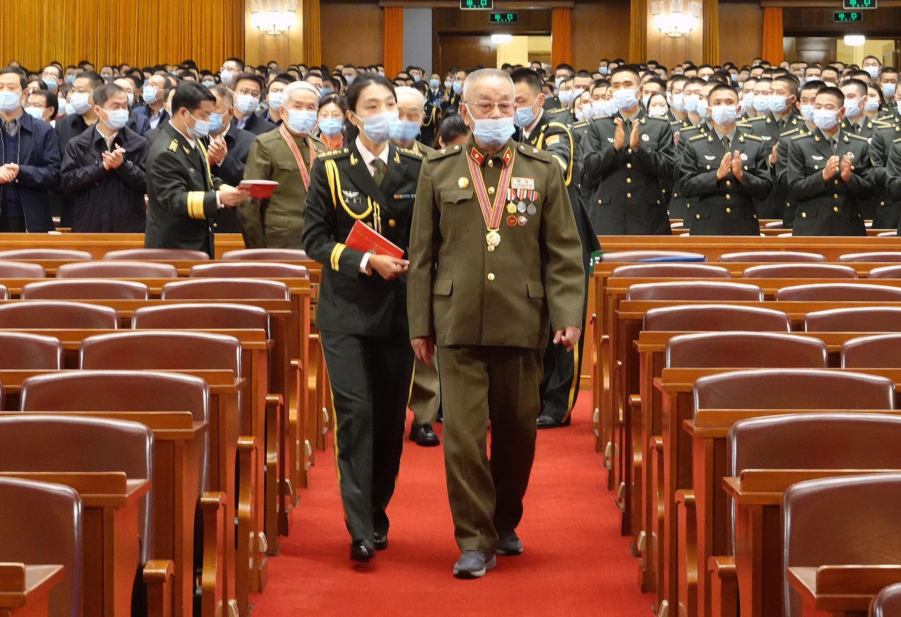

编者按：70年前，由中华优秀儿女组成的中国人民志愿军，肩负着人民的重托、民族的期望，高举保卫和平、反抗侵略的正义旗帜，雄赳赳、气昂昂，跨过鸭绿江，发扬伟大的爱国主义精神和革命英雄主义精神，同朝鲜人民和军队一道，历经两年零9个月艰苦卓绝的浴血奋战，赢得了抗美援朝战争伟大胜利。习近平总书记在纪念中国人民志愿军抗美援朝出国作战70周年大会上的讲话中指出：“抗美援朝战争伟大胜利，将永远铭刻在中华民族的史册上！永远铭刻在人类和平、发展、进步的史册上！”70年来，我们始终没有忘记！一起来看总书记怎么说。
10月23日，纪念中国人民志愿军抗美援朝出国作战70周年大会在北京人民大会堂隆重举行。中共中央总书记、国家主席、中央军委主席习近平在大会上发表重要讲话。新华社记者 刘卫兵/摄
70年来，我们始终没有忘记老一辈革命家为维护国际正义、捍卫世界和平、保卫新生共和国所建立的不朽功勋，始终没有忘记党中央和毛泽东同志当年作出中国人民志愿军出国作战重大决策的深远意义。
70年来，我们始终没有忘记谱写了气壮山河英雄赞歌的中国人民志愿军将士，以及所有为这场战争胜利作出贡献的人们。
10月23日上午，纪念中国人民志愿军抗美援朝出国作战70周年大会在北京人民大会堂隆重举行。这是大会前，志愿军老战士、老同志入场。新华社记者 赖向东/摄

70年来，我们始终没有忘记在抗美援朝战争中英勇牺牲的烈士们。19万7千多名英雄儿女为了祖国、为了人民、为了和平献出了宝贵生命。烈士们的功绩彪炳千秋，烈士们的英名万古流芳！
1958年，中国人民志愿军全部撤离朝鲜。这是朝鲜人民欢送中国人民志愿军回国的场面。新华社记者 吕厚民/摄
在抗美援朝战争中，朝鲜党、政府、人民关心、爱护、支援中国人民志愿军，中朝两国人民和军队休戚与共、生死相依，用鲜血凝结成了伟大战斗友谊。世界上一切爱好和平的国家和人民、友好组织和友好人士，对中国人民志愿军入朝作战给予了有力支援和支持。
来自: 求是网；作者： 申小提 编制